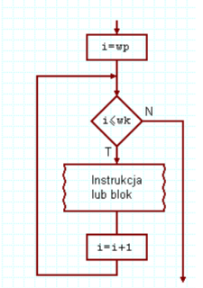
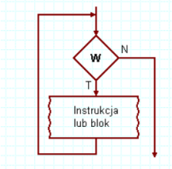
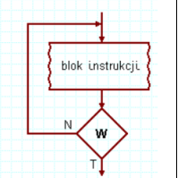

for (zainicjowanie_zmiennej; warunek_kończący_wykonywanie_pętli; zmiana_zmiennej) {
}
Pętla for wykonuje kod określoną liczbę razy. Najpierw ustawia zmienną, potem sprawdza warunek, a po każdej iteracji zmienia wartość zmiennej.

while (wyrażenie_sprawdzające_zakończenie_pętli) {
}
Pętla while najpierw sprawdza warunek, a dopiero potem wykonuje kod. Może się nie wykonać ani razu.

do {
} while (warunek);
Pętla do...while zawsze wykona się przynajmniej raz, ponieważ warunek sprawdzany jest dopiero po wykonaniu kodu.
